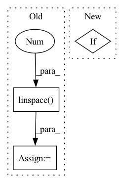

Pattern ID :29469
Before Change
sol : callabale of the solution
"""
X = Variable(torch.linspace( -5,5 ,100) .view(100,1,1))
X.requires_grad = True
xn = X.detach().numpy().flatten()
if callable(sol):
vs = sol(xn)
plt.plot(xn,vs,color="//b70000",linewidth=4,linestyle="--")
vals = net.wf(X)
vn = vals.detach().numpy().flatten()
vn /= np.linalg.norm(vn)
plt.plot(xn,vn,color="black",linewidth=2)
if pot:After Change
sol : callabale of the solution
"""
if ax is None:
fig = plt.figure()
ax = fig.add_subplot( 111 )
show_plot = TrueIn pattern: SUPERPATTERN
Frequency: 5
Non-data size: 3
Instances Fragment ID: 87466613
Project Name: nlesc-jcer/qmctorch
Commit Name: 37d3f7cd139f4d92d321cada5405fa11bb6c9574
Time: 2019-06-19
Author: nicolas.gm.renaud@gmail.com
File Name: pyCHAMP/solver/plot.py
M Class Name: AnonimousClass
N Class Name: AnonimousClass
M Method Name: plot_wf_1d(8)
N Method Name: plot_wf_1d(4)
M Parent Class:
N Parent Class:
M File Name: pyCHAMP/solver/plot.py
N File Name: pyCHAMP/solver/plot.py
M Start Line: 109
M End Line: 138
N Start Line: 108
N End Line: 160
Before Change
def _regplot(x, y, ax, ci=None, line_color=None, fill_color=None):
grid = np.linspace( np.min(x), np.max(x), 100 )
x = np.c_[np.ones(len(x)), x]
grid = np.c_[np.ones(len(grid)), grid]
yhat = grid.dot(reg_func(x, y))
ax.plot(grid[:, 1], yhat, color=line_color)
After Change
ax.plot(grid[:, 1], yhat, color=line_color)
if ci:
ax.fill_between(grid[:, 1], *err_bands,
facecolor=fill_color,
alpha=.15) Fragment ID: 87466590
Project Name: atrcheema/dl4seq
Commit Name: ada05fddfec7d3fe7900ffa98fd44e1c5270e43a
Time: 2022-01-12
Author: ather_abbas786@yahoo.com
File Name: ai4water/utils/easy_mpl.py
M Class Name: AnonimousClass
N Class Name: AnonimousClass
M Method Name: _regplot(6)
N Method Name: _regplot(6)
M Parent Class:
N Parent Class:
M File Name: ai4water/utils/easy_mpl.py
N File Name: ai4water/utils/easy_mpl.py
M Start Line: 205
M End Line: 222
N Start Line: 238
N End Line: 246
Before Change
if self.split != "test":
batch["label_valence"] = torch.from_numpy(labels[..., 0])
// discretize valence into categories
bins = np.linspace( -1, 1, 4 , endpoint=False)
class_labels = np.digitize(labels[..., 0], bins) - 1
batch["class_valence"] = torch.from_numpy(class_labels)
batch["label_arousal"] = torch.from_numpy(labels[..., 1])
After Change
src_aud_fold = os.path.join(self.path, "mel_spec", vid_name + ".npy")
audio = load_audio(src_aud_fold, start_frame, track_len)
if self.split != "test":
labels = self.labels[vid_name][start_frame: start_frame + track_len]
if has_expr:
expr_labels = self.labels_expr[vid_name][start_frame: start_frame + track_len] Fragment ID: 87466621
Project Name: sailordiary/m3f.pytorch
Commit Name: a576188eaa852121b4277b8a4553ded796eadeb9
Time: 2020-02-03
Author: me@sailorzhang.com
File Name: models/dataset.py
M Class Name: AffWild2SequenceDataset
N Class Name: AffWild2SequenceDataset
M Method Name: __getitem__(2)
N Method Name: __getitem__(2)
M Parent Class: Dataset
N Parent Class: Dataset
M File Name: models/dataset.py
N File Name: models/dataset.py
M Start Line: 213
M End Line: 243
N Start Line: 199
N End Line: 255
Before Change
plt.colorbar()
plt.show()
timeseries = self.compute_ws()
time = np.linspace(0 , self.n_steps * self.dt, self.n_steps)
plt.plot(time.T, timeseries.T)
plt.xlabel("Time")
plt.ylabel("Neuronal activity")
plt.ylim([0, 1])After Change
axes[1].set_xlabel("Time [ms]")
axes[1].set_ylabel("Neuronal activity [-]")
axes[1].set_ylim([0, 1])
if show:
plt.show()
def raster_plot(self, ax): Fragment ID: 87466589
Project Name: neurotorch/neurotorch
Commit Name: 6212a789c98d8f2102983964329d9058339d5272
Time: 2022-08-02
Author: 50332514+JeremieGince@users.noreply.github.com
File Name: applications/fit_wilson_cowan_with_lif/dataset.py
M Class Name: WilsonCowanTimeSeries
N Class Name: WilsonCowanTimeSeries
M Method Name: plot_timeseries(4)
N Method Name: plot_timeseries(2)
M Parent Class: Dataset
N Parent Class: Dataset
M File Name: applications/fit_wilson_cowan_with_lif/dataset.py
N File Name: applications/fit_wilson_cowan_with_lif/dataset.py
M Start Line: 80
M End Line: 94
N Start Line: 81
N End Line: 99